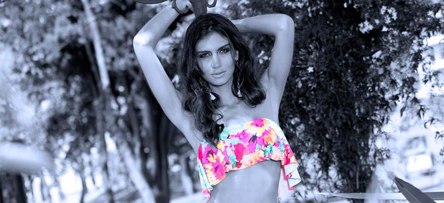

Juliana Robledo
con el apoyo de
IDRD – Instagram: idrdbogota
La Agencia – Instagram: laagenciamodels
Vestidos de baño
Mar de plata Instagram: Mardeplatabikinis
Palo rosa Instagram: palorosabeachwear
Accesorios
Pecunia instagram: pecuniacolombia
La top model que conquistó la web
La top model que en su adolescencia se sentía la más fea del mundo.
Nací en el país equivocado, era la frase que siempre decía Juliana Robledo luego de salir de un casting. Que la querían más gordita, que la querían más flaquita (pero de dónde), que la querían rubia, que la querían más bajita. Definitivamente es muy complicado entender cuál es el estándar de belleza que buscan las agencias y el ser humano.
Y fue esta frase la que le dio la idea de tener su propia web serie, “Nací en el país equivocado”, en donde cuenta anécdotas del modelaje propias y de amigas. Pueden encontrar la primera temporada en YouTube o en la página oficial julianarobledo.com y esperar con ansias la segunda temporada que está a punto de salir.
Pero no todo ha sido color de rosa, Juliana quien hoy disfruta su altura y su delgadez, porque no hace ninguna dieta y come de todo; en su adolescencia mientras sus amigas empezaron a desarrollar los atributos físicos, ella solo crecía y crecía y crecía, ningún niño le ponía atención por su altura y ella simplemente se sentía la más fea del mundo.

{kind=link}
A los 15 años se dio cuenta que podría explotar su físico y estatura, y le contó a sus conservadores padres que quería ser modelo, carrera en la que la dejaron incursionar hasta los 18 años. Desde ese momento hasta hoy ha sido portada en varias revistas internacionales, ha actuado en telenovelas y películas colombianas y es protagonista de su propia serie web.
Esta top model, quien conquista solo con su mirada y sin una gota de maquillaje, hace amigos por doquier, sonríe, saluda, se toma fotos, come y sobre todo hace lo suyo, posar ante la cámara de forma natural, sin necesidad de exagerar.
Aunque a veces, ella piense que nació en el país equivocado, más colombiana no puede ser.
Belleza, inteligencia y emprendimiento lo pueden encontrar en una mujer. Ella es Juliana Robledo.
29 años
Bogotana a morir
Odia el frío
Modelo, actriz, libretista, empresaria, directora de artes escénicas, etc.
Alejandra Robledo su hermanita menor
{kind=link}
{kind=link}
{kind=link}
{kind=link}